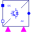

PolyphaseTwoLevel_RPolyphase DC to AC converter with R load |
|
Diagram
{kind=link}
Information
This information is part of the Modelica Standard Library maintained by the Modelica Association.
Plot current currentSensor.i[:], harmonic current magnitude fundamentalWaveCurrent[:].y_RMS, harmonic voltage magnitude fundamentalWaveVoltage[:].y_RMS. The instantaneous voltages voltageSensor.i[:] and currents currentSensor.i[:] directly show the switching pattern of the inverter. There is not smoothing effect due to an inductance in this example; see PolyphaseTwoLevel_RL.
Parameters (4)
| m |
Value: 3 Type: Integer Description: Number of phases |
|---|---|
| f |
Value: 1000 Type: Frequency (Hz) Description: Switching frequency |
| f1 |
Value: 50 Type: Frequency (Hz) Description: Fundamental wave AC frequency |
| R |
Value: 100 Type: Resistance (Ω) Description: Resistance |
Components (12)
| constantVoltage_n |
Type: ConstantVoltage |
|
|---|---|---|
|  | inverter |
Type: Polyphase2Level |
| currentSensor |
Type: CurrentSensor |
|
| voltageSensor |
Type: VoltageSensor |
|
| ground |
Type: Ground |
|
| signalPWM |
Type: SignalPWM[m] |
|
| constantVoltage_p |
Type: ConstantVoltage |
|
| sine |
Type: Sine[m] |
|
| fundamentalWaveCurrent |
Type: Harmonic[m] |
|
| fundamentalWaveVoltage |
Type: Harmonic[m] |
|
| resistor |
Type: Resistor |
|
| star |
Type: Star |